Design Process
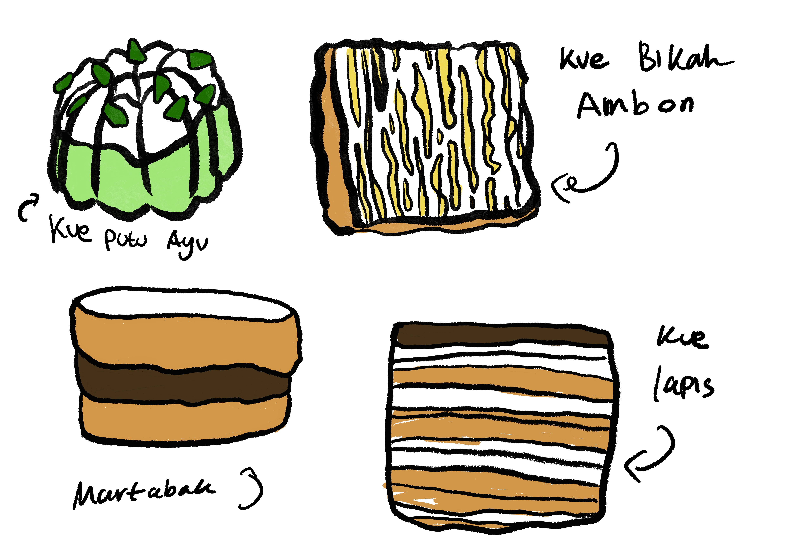
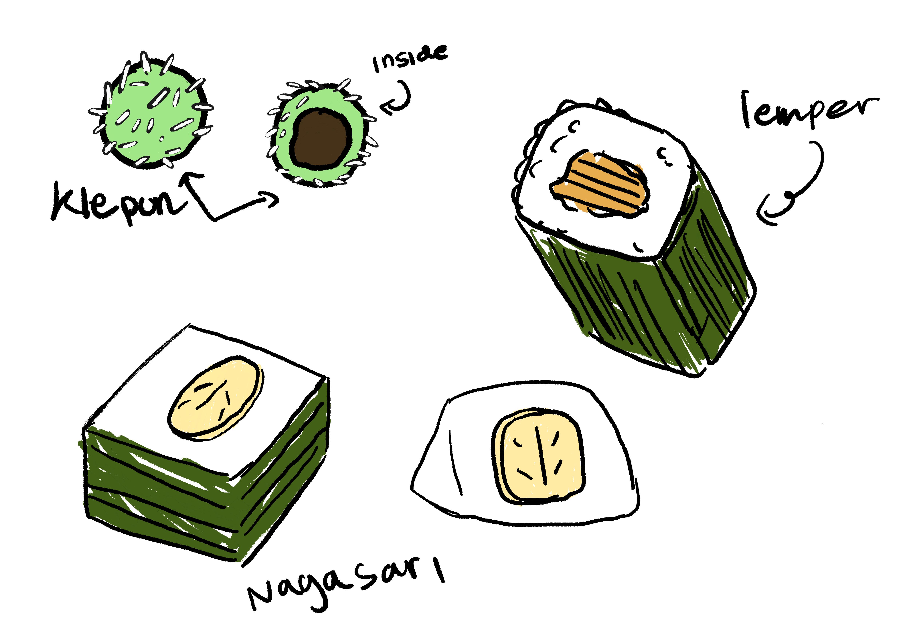
For this week, I wanted to try lino printing, so when I sketched digitally, I deliberately mimicked the look of a carved block. I played around with the thickness of the illustrations because lino tools come in a wide range of sizes, so the thickness isn't consistent. I didn't have a specific style in mind yet, so I experimented with it.


After I finished, I printed them on A4 paper, but I noticed the illustrations came out twice the original size. Since this is an experiment, I kept using the illustrations because I thought that if the snack was larger, I could include small details in the linotype that the digital drawing couldn’t, since they would be too small to notice.
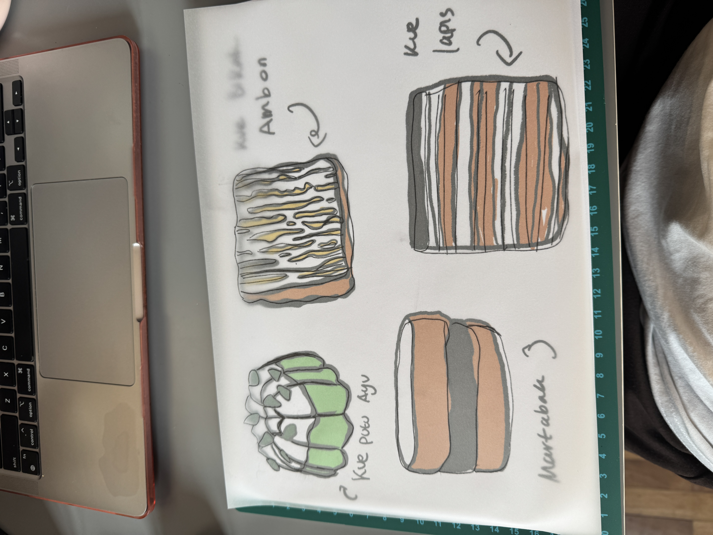
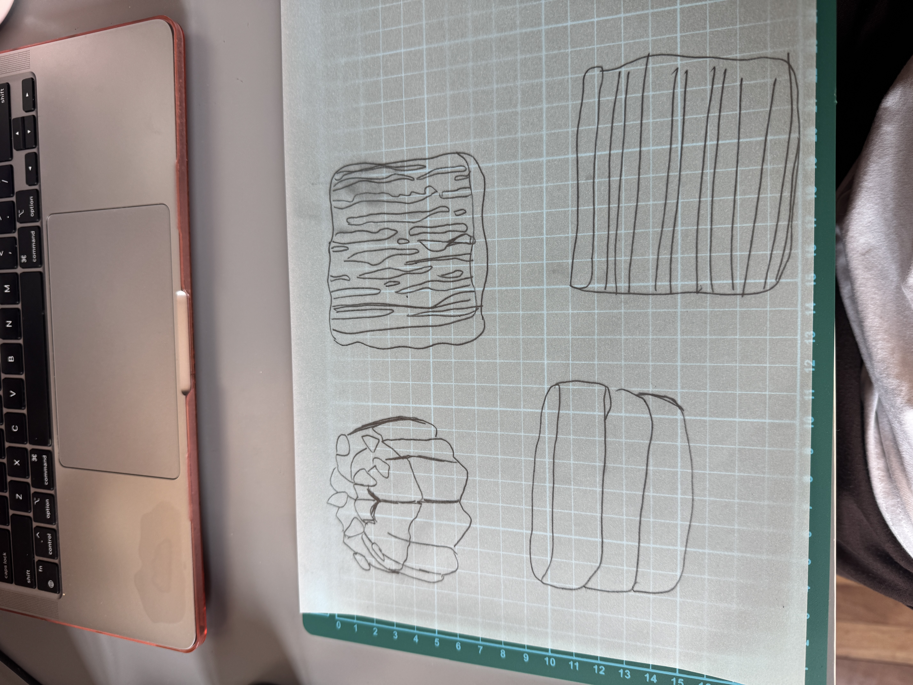


Then I began to trace them; I transferred them onto the lino, making sure the image was there before I started carving. In my first attempt, I traced directly on the lino with tracing paper on top, which created messy, imperfect, blurred lines. Along the way, I realized I was using the tracing paper the wrong way; I should have shaded the back of the tracing paper with the drawing on the other side, which wasted a lot of time.
I also tried different lino block surfaces. I got two different colors of lino blocks, which are green and white, and the difference was that the green block has a larger surface area. I struggled a lot when I carved with the white lino block because it's really dense, making it difficult to carve, since you need a lot of arm power for one stroke. That’s why I stopped using the white lino block and switched to sticking with the green block.
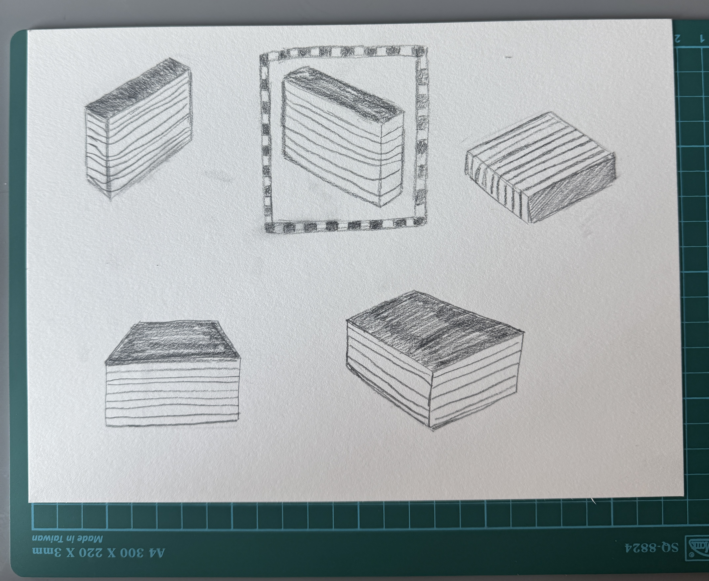
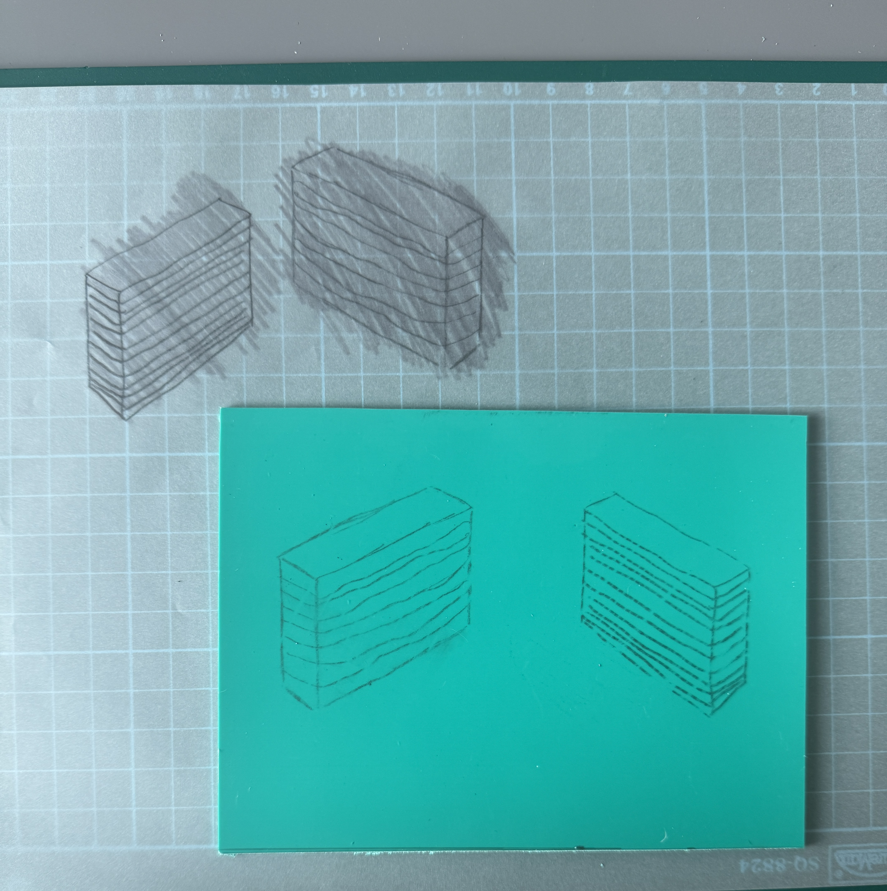
I also decided to try sketching on paper because starting to draw digitally made me realize I take so many extra steps when I can just draw on paper; it saves me a lot of time, and I can control the scale of the food. I sketched five different perspectives of the kue lapis, with some showing the whole cake and others drawn as slices. This also helps me focus more on the structure and think less about which colors to include in the drawing.
Color Experimentation

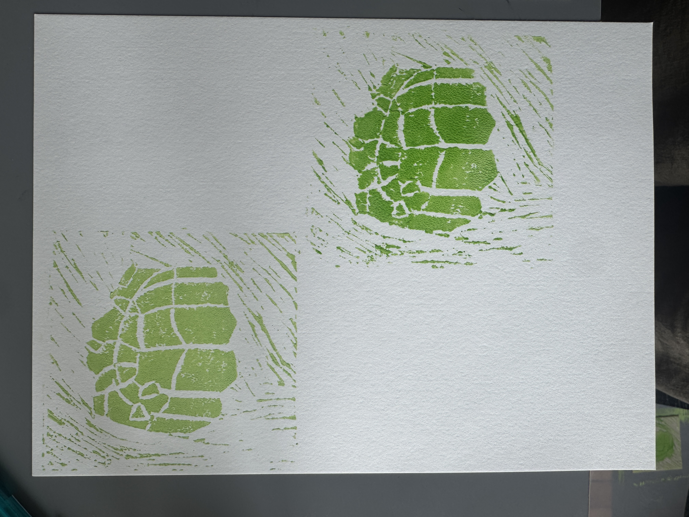
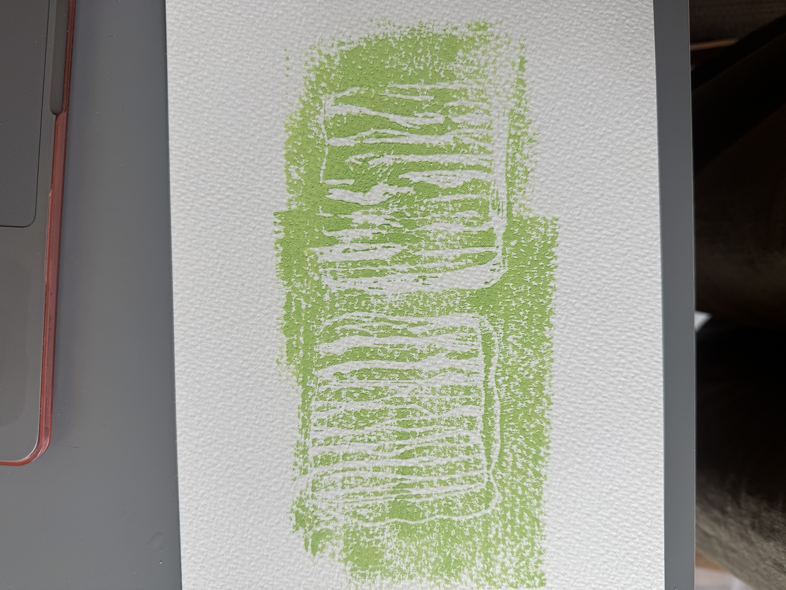
I experimented with the colors for the lino prints. I started with one type of color, which is green, because I wanted to test out how vibrant the color is and, if I were to add white, what it would look like with the gradient. There wasn’t much difference in the color; it was just more prominent and darker when I didn’t add white. I felt it would be much more interesting if I could add another color besides green.


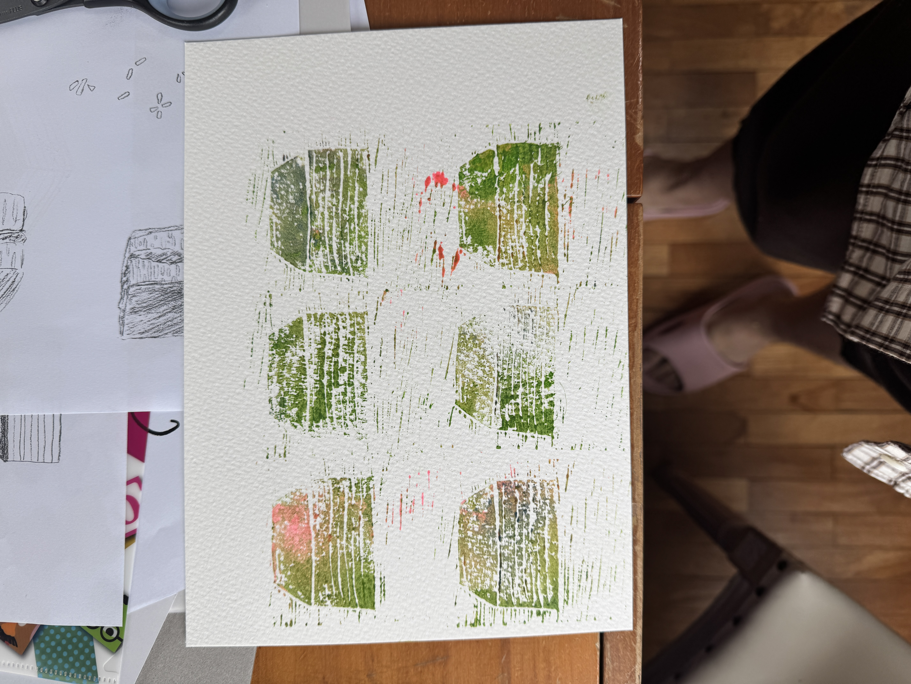
I added pink, blue, and yellow with the green because I wanted to see how it would look when I mixed the colors. I believe the different colors add more depth to the snack because they contrast with each other and create highlights without using white. However, I need to work more on the lino-print technique because sometimes the lines aren't clearly defined, and some parts of the structure aren't visible.
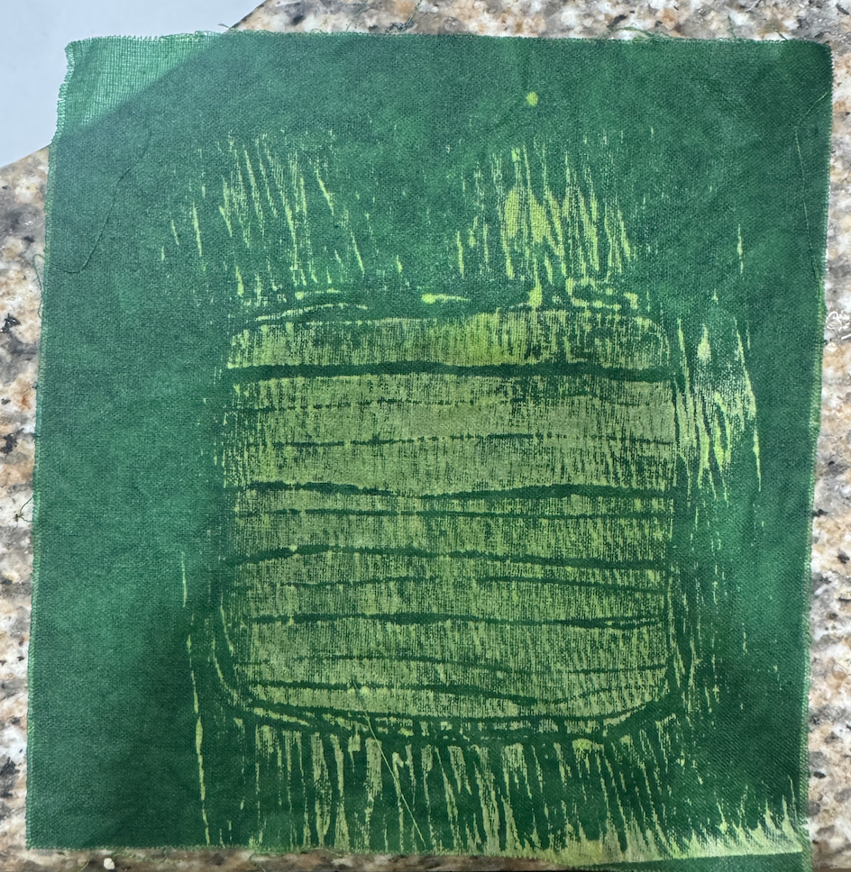
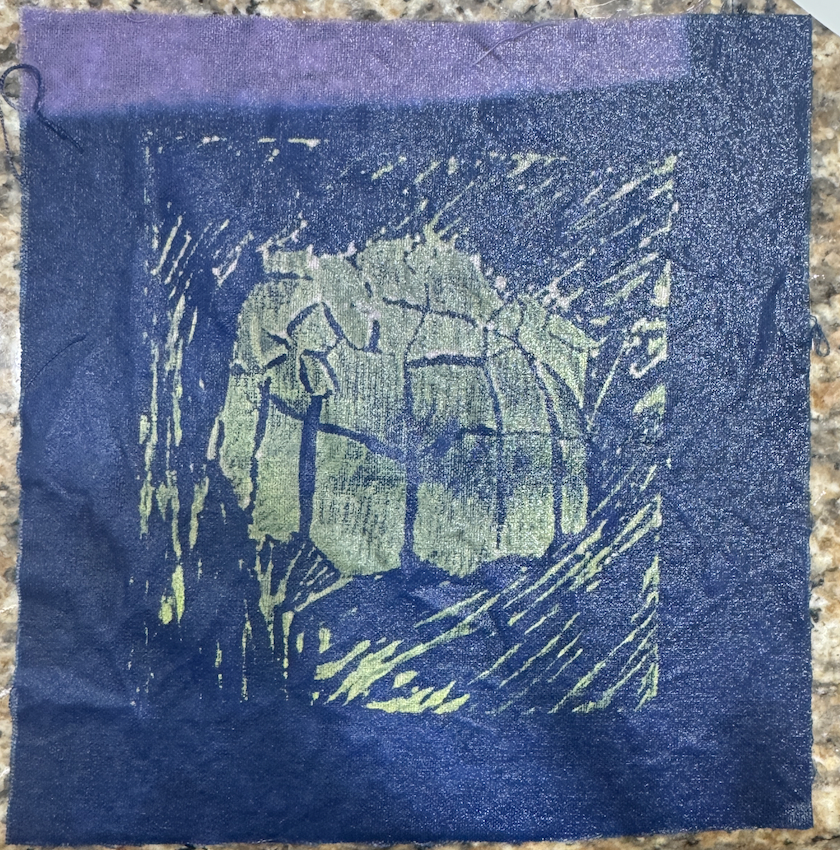
I also tried cyanotype, where I stamped ink onto the cyanotype fabric, then washed it off to remove the paint and reveal the print underneath. It was an interesting experiment, but I decided not to continue this process because I wanted to focus more on the linotype, and if I were to do both, it would be time-consuming.
Reflection
This week, I was exploring which mediums I wanted to use. I wanted to try a little bit of everything, so I didn’t limit myself to just digital drawings. I decided to try physical mediums because digital mediums kind of limited what I wanted to do. For example, I can’t do lino-type and cyanotype digitally.
I really enjoy the process of lino printing; it was really fun experimenting with the mix of colors and playing around with the printing process. It helps me to be open to more ideas of what I can do in my project. As of now, I don’t really think much of the final outcome; I just wanted to explore more mediums, so I know what I like and don’t like to do and narrow down the scope of things from there. I do encounter difficulties with linoleum printing, but I still pushed through and hope my techniques will improve over time.